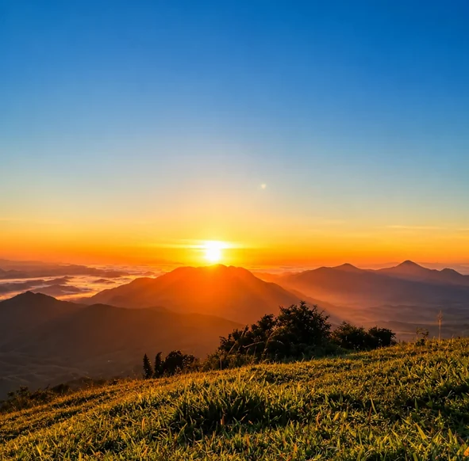
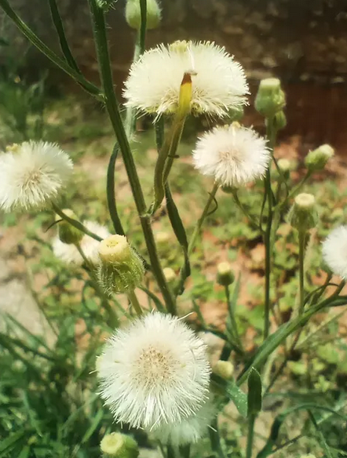

FOTOGRAFIA · NATUREZA
O mundo
em detalhes.
Paisagens, encontros e pequenos instantes
que merecem ser guardados.
SKY PHOTOGRAPHYPRISCILA MIGUEL · SAQUAREMA, RJ
01 UM OLHAR COM SENSIBILIDADE
ENTRE LUZ, TEMPO E NATUREZA
Há beleza no que
acontece sem pressa.
Uma coleção de fotografias de paisagens e registros da vida acontecendo, de momentos que, por um instante, pediram para ser vistos.
02 PORTFÓLIO
IMAGENS SELECIONADAS
O que os olhos
encontram.
Paisagens e vida
em seus próprios ritmos.
FOTOGRAFIAS DE PRISCILA MIGUELTOQUE EM UMA IMAGEM PARA AMPLIAR ↗
03 PALAVRAS AO VENTO
DENTE-DE-LEÃO
“
Como um dente-de-leão, a vida floresce por um instante, depois solta seus sonhos ao vento. Alguns ficam, outros partem… mas todos carregam a beleza de ter florescido.
Priscila Miguel

04 SOBRE
A FOTÓGRAFA POR TRÁS DA SKY
Priscila
Miguel.
SKY PHOTOGRAPHY
Meu nome é Priscila Miguel, sou fotógrafa em Saquarema, no Rio de Janeiro. A SKY Photography é o espaço onde compartilho meu olhar sobre a natureza e a vida em seus próprios ritmos.
Entre luzes, encontros e pequenos detalhes, registro momentos que me convidam a observar o mundo com mais calma e sensibilidade.
Acompanhe a SKY no Instagram ↗SAQUAREMA · RJCOM CARINHO, PRISCILA.